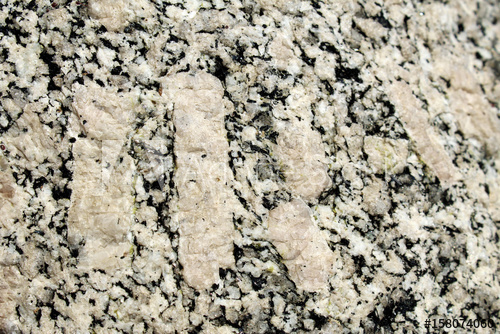
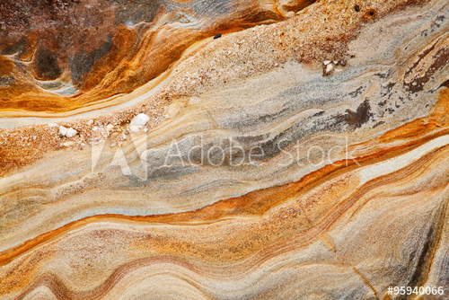
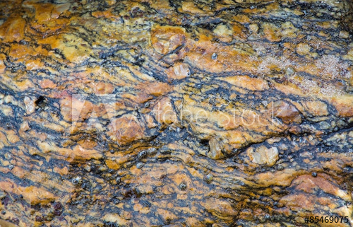

Bergart er innenfor geologien en fast samling av en eller flere slags mineraler. Bergartene karakteriserer steinmaterialet i naturen og er relativt klart definert og kartlagt, selv om grensene mellom den kan være flytende på grunn av ofte sterk blanding av mineraler og bergarter. Læren om bergartene kalles petrologi, som omfatter de bergartdannende prosessene i og på overflaten av jorden, men mest klassifikasjonen av bergartene ut fra strukturen og hvilke mineraler de er bygd opp av. De tre hovedtypene av bergart er magmatiskebergart, sedimentære bergart og metamorfe bergart.
  